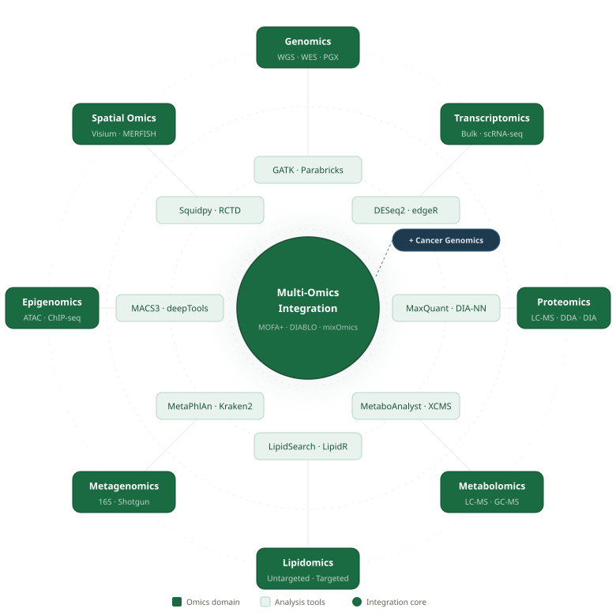

BiOmicAge delivers end-to-end bioinformatics services across every omics domain — proteomics, genomics, lipidomics, single-cell, metagenomics, and beyond. Reproducible. Cloud-native. AI-assisted.
Multi-omics is not a pipeline — it's a convergence. Each layer of biology feeds into a shared integration core, revealing cross-omics patterns no single assay can capture alone.

Every analysis we deliver is reproducible, cloud-ready, and grounded in biological understanding — not just numbers.
Expert analysis across 11 omics domains with publication-ready outputs.
A transparent, structured process — you stay informed at every milestone.
Share your dataset and research question — we'll respond within 24 hours with a scoping proposal and timeline.